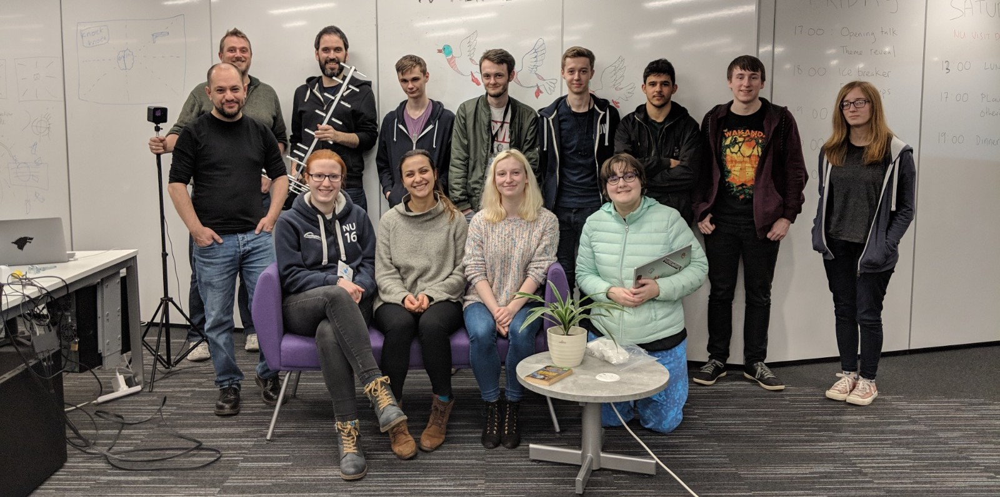

Global Game Jam 2020 - Game Over!
It's game over for Global Game Jam 2020. Check out the games we've made this year:
- Astéria
- Car Crew Carnage
- Imperium Navis
- Le Monk Has Arrived
- Ship Mechanic Simulator
- Space Mechanic
- The Broken Arms
We would like to say thanks to the organizing team: Kamlesh Mistry, John Rooksby, Christina Vasiliou, Edmond Ho, Mariah Rodrigues (Yr 1 Student Rep), Zoe Kinsella (Final Yr Student Rep), Martin Caisley (Final Yr Student Rep) for sorting out all the preparations, leading the sessions, helping the jammers and staying with them (until 3am!) during the whole event!
We also received a lot of help, support and understanding from: IT Helpline (for guest accounts). EE Physical Resources (particularly Janet, who helped us to order the food and drinks at the very last moment). IT Services (particularly Kaveen and Jonathan, who helped us to sort out the PC ac issues). The security staff. The cleaners. Shaun Lawson and Julie Walters (thanks for supporting the refreshments to boost the energy levels of the jammers). ...And all colleagues who helped us in promoting the event.
And, of course, congratulations to everyone that took part! Even if you didn't make it to the end, we're glad you participated.
Global Game Jam 2019 - Game Over!
It's game over for Global Game Jam 2019. Check out the games we've made this year:
